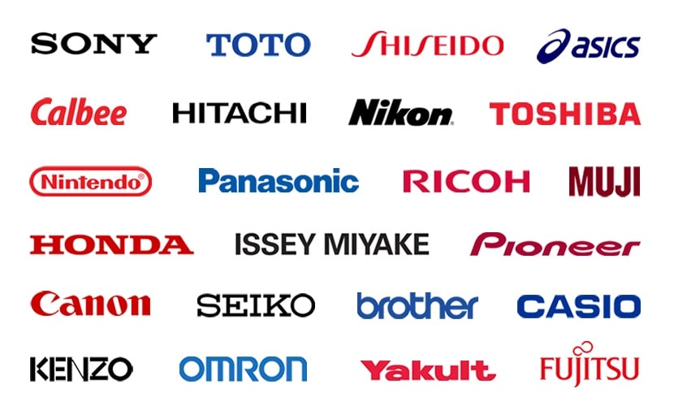

Japanese Companies
About some siginificance of japanese companies
- Japan is home to several unique companies that have made significant contributions to their respective industries and have distinct characteristics that set them apart from others globally. Here are a few notable examples:
- These are large Japanese trading companies like Mitsubishi Corporation, Mitsui & Co., and Itochu Corporation. They are unique to Japan and play a crucial role in international trade, acting as intermediaries in a wide range of industries from raw materials to finished products. Their ability to adapt to global economic changes and maintain strong relationships with various sectors is a key differentiator.
- These are conglomerates or business groups like Toyota Group, Mitsubishi Group, and Sumitomo Group. Each keiretsu consists of numerous companies across various industries, from automotive to electronics, and they often support each other through mutual shareholdings and business agreements. This interconnectedness provides stability and resilience, which is unique to the Japanese business model.
- Known for its innovative video games and iconic characters like Mario and Donkey Kong, Nintendo has a long history of blending tradition with modern technology. Its ability to continually reinvent itself and stay relevant in the rapidly changing gaming industry sets it apart from other entertainment companies.
- As one of the world's largest automotive manufacturers, Toyota is renowned for its commitment to quality and innovation. The company's pioneering work in hybrid and electric vehicles, as well as its efficient production methods like the Toyota Production System, have made it a leader in the automotive industry.
- A global leader in electronics, entertainment, and gaming, Sony is known for its cutting-edge technology and diverse product range, including the PlayStation consoles, cameras, and audio equipment. Its ability to integrate hardware, software, and content has set it apart in the tech industry.
- These companies exemplify Japan's unique approach to business, combining tradition with innovation and fostering strong inter-company relationships. Their significance lies in their ability to adapt, innovate, and maintain a competitive edge in the global market.
Here are some referance links:

About Me
Contact Me